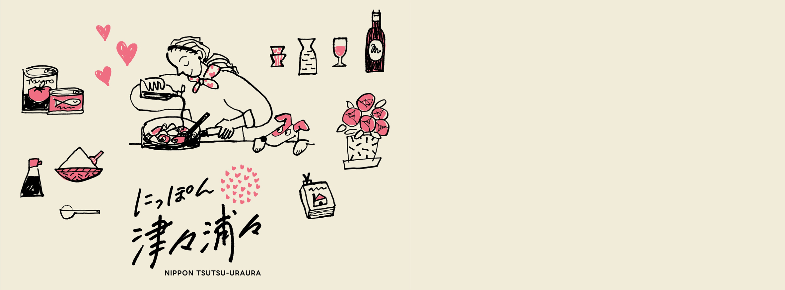
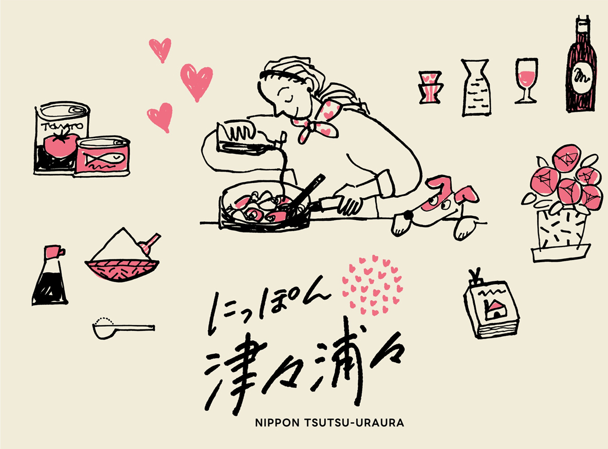

商品の選び方や食まわりの豆知識、季節のおすすめをまとめた読み物です。
今日の献立に迷ったらここから。すぐ試せるレシピを集めました。
ABOUT TSUTSU-URAURA
にっぽん津々浦々では、日々の食卓がちょっと楽しくなるレシピと、商品の選び方や食まわりの豆知識をまとめた特集記事を配信しています。
「今日の献立に困ったらレシピへ」「じっくり読んで選びたいときは特集へ」。目的に合わせて、読みたい記事にすぐたどり着けるようページを整理しました。
ショップを見る